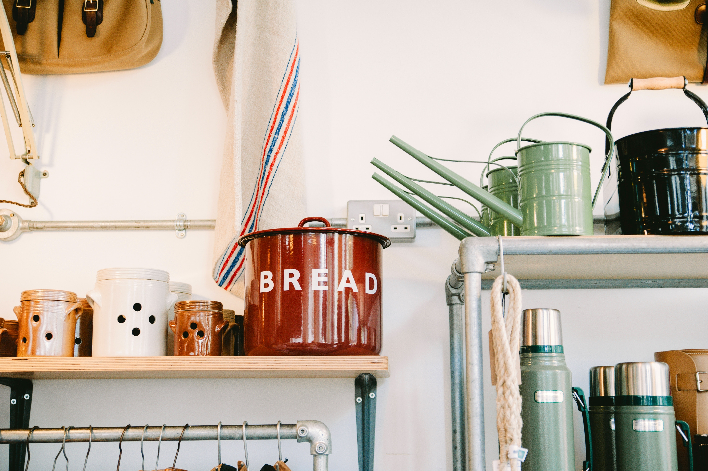

Everything we make from our thrift store goes to buying veterans and their spouse groceries!
New, Like New, and Gently Used, you never know what wonderful treasures you will find. We have a large variety of household necessities as well as some really unique items and collectibles.
CLOTHING AND SHOES
Need to spruce up your Wardrobe? Come take a look at our wonderful selection of Economical and Designer Brand clothing. We rotate our stock often so there is always something new to add to your closet. The only thing better than finding that ‘perfect’ blouse is getting it for such a great price!!
And do you need SHOES!!!!!!!!! From slippers & tennis shoes to work boots & stilettos, VSTN has your SHOES! You won’t believe the many styles and sizes we have available. We get wonderful Casual and Formal shoes that are at a great price for that one time event or everyday wear.

FURNITURE AND KITCHENWARE
We have had NEW, Practically New, and Gently Used Furniture, Strollers, Bike Trailers, Walkers, Discovery Toys, Baby Monitors, and ooohhh the cutest little clothes!!!! Get your Baby Shower supplies, gifts & special finds all at the VSTN Thrift Store.
Furniture and appliances are always popular and sell quickly.
Get individual pieces and complete sets of furniture and appliances. From basic pieces to antiques and one of a kind special accents, you never know what you will find.
This is also a great place to find dishes and glassware. Just need that single piece to complete your set? We may just have it! We get very nice vintage pieces and sets. We also sell to many crafty folks that turn our trinkets in to treasures!
SUPPLIES FOR KIDS
Got kids? We get sssooo much Crib with drawers & changing tablekid stuff. We have had NEW,
Practically New, and Gently Used Furniture, Strollers, Bike Trailers, Walkers, Discovery Toys, Baby
Monitors, and ooohhh the cutest little clothes!!!! Get your Baby Shower supplies, gifts & special finds all at the
VSTN Thrift Store.
And did we mention toys?? We have toys for every age group here at VTSN. Come take a look at our
selection!
ADULT NEEDS
Home Medical equipment and adult diapers are big sellers. We have walkers, wheelchairs, hospital beds, mobility scooters and much more at very reasonable prices.